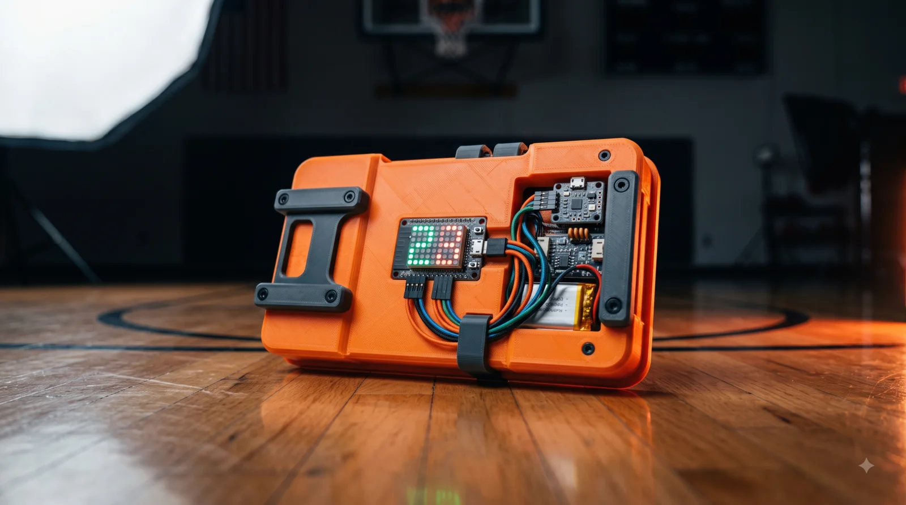
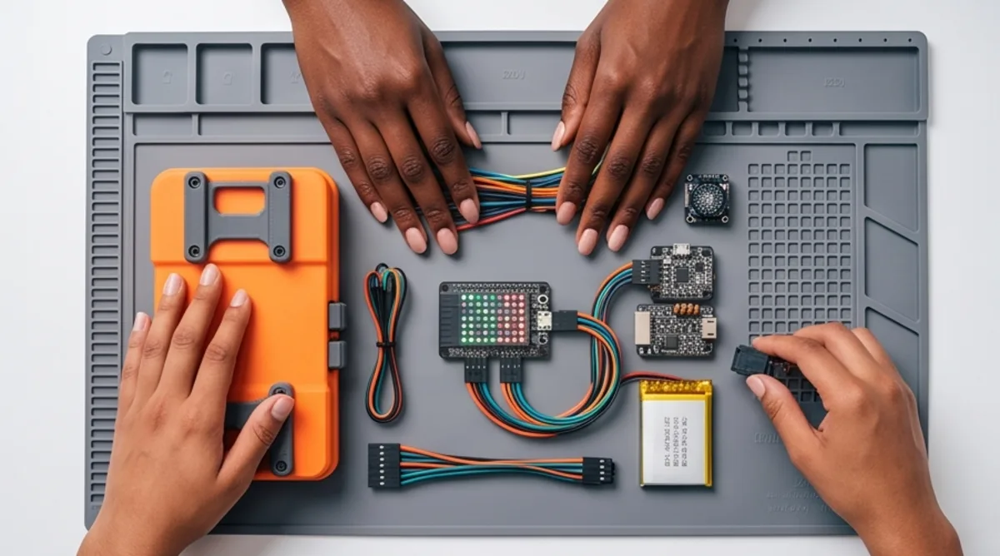
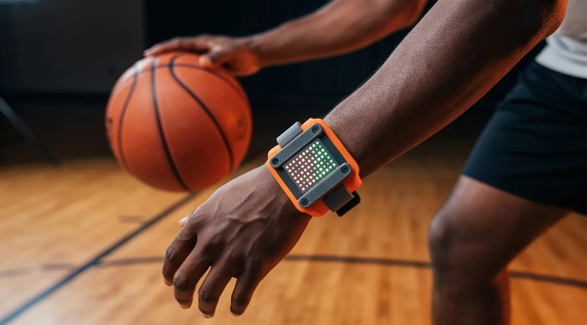
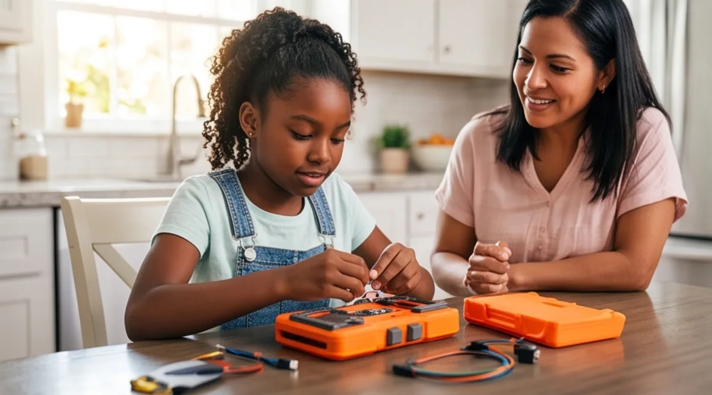
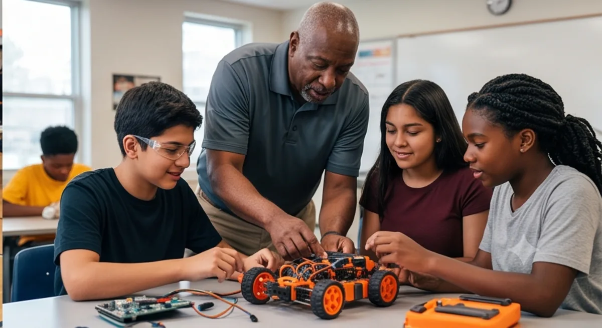
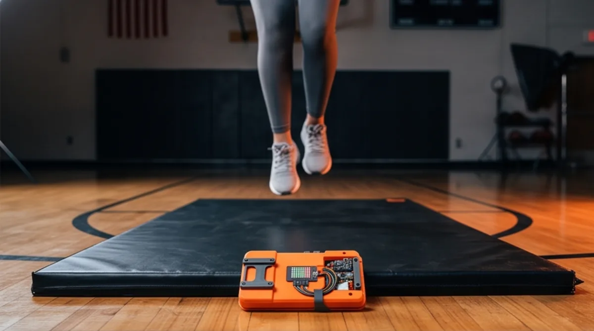
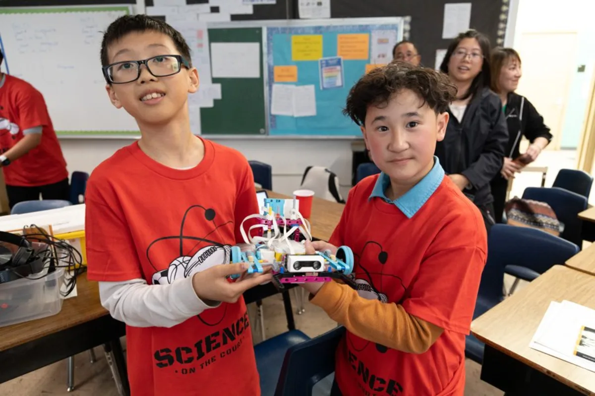
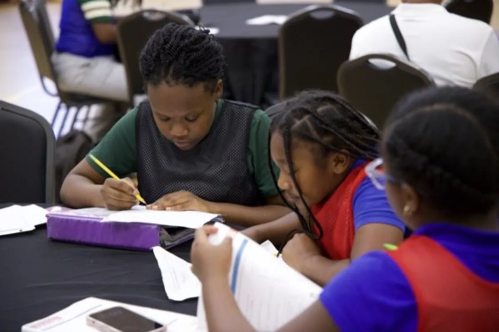
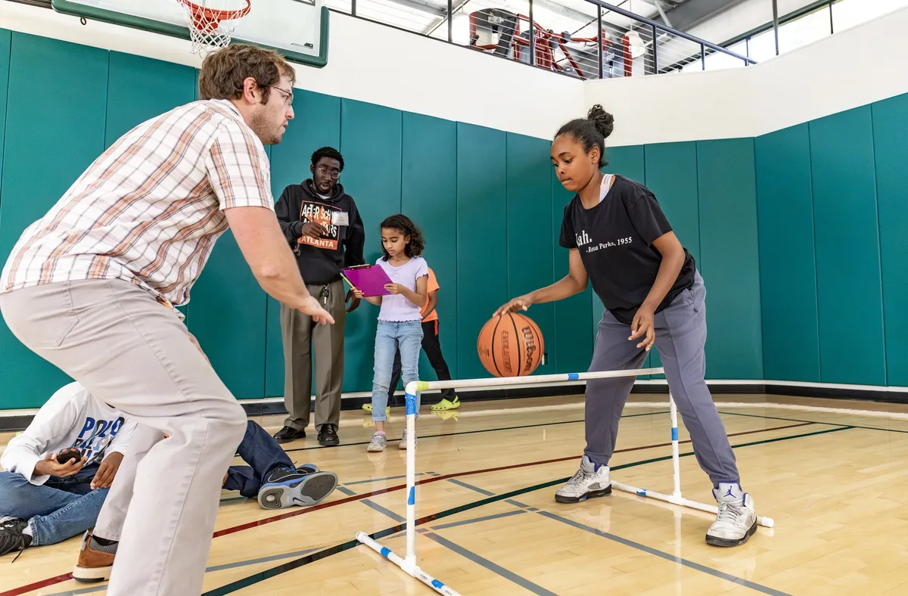
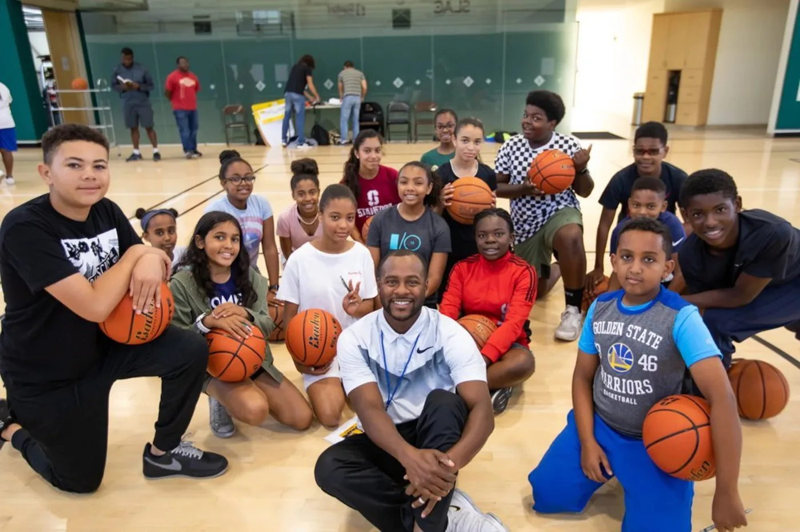

Build it. Measure it. Play it.
Sports-science and robotics kits from Science on the Court — sensors, motors, and 3D-printed parts that turn jump height, heart rate, and shot speed into hands-on STEM lessons. Every student builds their own kit and takes it home.
Get early accessLive demos arrive October 2026 — early-access members see them first. Tell us your organization and how many students you serve.

A first look
Concept renders of the kit family we're prototyping now.





A kit for every student
No sharing, no shelf time. Each learner builds, keeps, and continues at home.
Curriculum included
Standards-aligned lessons where the court is the laboratory — physics, data, and code through sport.
Staffed your way
We train your volunteers — or bring our instructors. You tell us how many students; we handle the rest.
The program is already real
The kits are new — the program isn't. Science on the Court has run basketball + STEM programming across the East Bay since 2019, in school districts and community sites.




For churches
Weekday programs plus Saturday office hours, so families beyond the neighborhood can take part.
For schools
Afterschool-ready: the same model behind our district programs across the East Bay.
For families
Learn at home with the kit, then bring it in — coaching and lab time on the weekend.